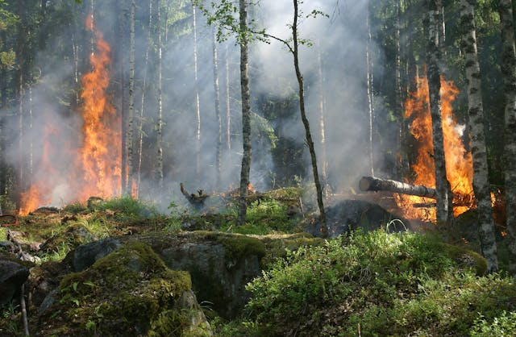

Situação atual
As concentrações de gases de efeito estufa estão em seus níveis mais altos em 2 milhões de anos, e aumentando. O planeta está cerca de 1,1°C mais quente do que no final do século XIX.
Como a terra é um sistema, mudanças em uma área podem influenciar alterações em todas as outras. As consequências são: secas intensas, falta de água, incêndios, aumento do nível do mar (derretimento do gelo polar), inundações, tempestades e redução da biodiversidade.
As emissões que causam as mudanças climáticas vêm de todas as partes do mundo, mas alguns países produzem muito mais que os outros. Os 10 países com maiores emissões contribuem com 68%, enquanto os 100 países menos emissores geram 3%.
Algumas medidas se tornam urgentes:
Utilizar fontes de energia renováveis, como solar e eólica.
Manter o aquecimento abaixo de 1,5°C até 2030, cortando metade das emissões, principalmente através da diminuição de combustíveis fósseis (numa taxa de 6% ao ano).
A adaptação ao impactos climáticos será necessária em todos os lugares, mas deve ser priorizada para as pessoas mais vulneráveis e com menos recursos.
Fazer com que os países mais industrializados cumpram com o compromisso de fornecer 100 bilhões de dólares por ano aos países menos favorecidos para que possam se adaptar.
Imagem 2: Floresta em chama

Fonte: Pexels, 2024